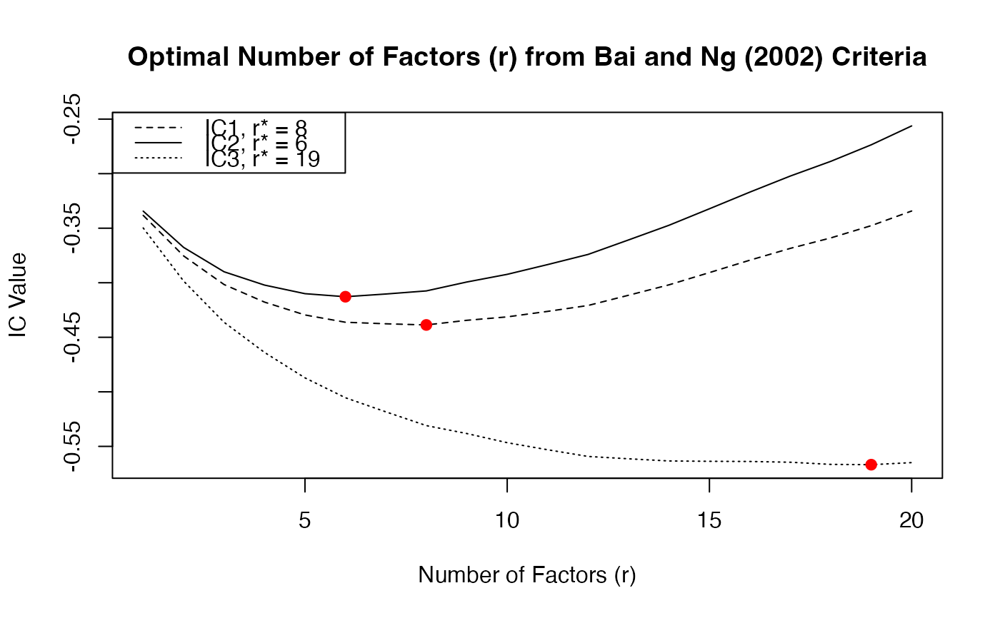

Minimizes 3 information criteria proposed by Bai and Ng (2002) to determine the optimal number of factors r* to be used in an approximate factor model. A Screeplot can also be computed to eyeball the number of factors in the spirit of Onatski (2010).
Arguments
- X
a
T x nnumeric data matrix or frame of stationary time series.- max.r
integer. The maximum number of factors for which IC should be computed (or eigenvalues to be displayed in the screeplot).
- x
an object of type 'ICr'.
- ...
- type
character. Either
"ev"(eigenvalues),"pve"(percent variance explained), or"cum.pve"(cumulative PVE). Multiple plots can be requested.- show.grid
logical.
TRUEshows gridlines in each plot.
Value
A list of 4 elements:
- F_pca
T x nmatrix of principle component factor estimates.- eigenvalues
the eigenvalues of the covariance matrix of
X.- IC
r.max x 3'table' containing the 3 information criteria of Bai and Ng (2002), computed for all values ofrfrom1:r.max.- r.star
vector of length 3 containing the number of factors (
r) minimizing each information criterion.
Details
Following Bai and Ng (2002) and De Valk et al. (2019), let \(NSSR(r)\) be the normalized sum of squared residuals \(SSR(r) / (n \times T)\) when r factors are estimated using principal components. Then the information criteria can be written as follows:
$$IC_{r1} = \ln(NSSR(r)) + r\left(\frac{n + T}{nT}\right) + \ln\left(\frac{nT}{n + T}\right)$$ $$IC_{r2} = \ln(NSSR(r)) + r\left(\frac{n + T}{nT}\right) + \ln(\min(n, T))$$ $$IC_{r3} = \ln(NSSR(r)) + r\left(\frac{\ln(\min(n, T))}{\min(n, T)}\right)$$
The optimal number of factors r* corresponds to the minimum IC. The three criteria are are asymptotically equivalent, but may give significantly different results for finite samples. The penalty in \(IC_{r2}\) is highest in finite samples.
In the Screeplot a horizontal dashed line is shown signifying an eigenvalue of 1, or a share of variance corresponding to 1 divided by the number of eigenvalues.
Note
To determine the number of lags (p) in the factor transition equation, use the function vars::VARselect with r* principle components (also returned by ICr).
References
Bai, J., Ng, S. (2002). Determining the Number of Factors in Approximate Factor Models. Econometrica, 70(1), 191-221. doi: 10.1111/1468-0262.00273
Onatski, A. (2010). Determining the number of factors from empirical distribution of eigenvalues. The Review of Economics and Statistics, 92(4), 1004-1016.
De Valk, S., de Mattos, D., & Ferreira, P. (2019). Nowcasting: An R package for predicting economic variables using dynamic factor models. The R Journal, 11(1), 230-244.
Examples
library(xts)
library(vars)
ics = ICr(diff(BM14_M))
#> Missing values detected: imputing data with tsnarmimp() with default settings
print(ics)
#> Optimal Number of Factors (r) from Bai and Ng (2002) Criteria
#>
#> IC1 IC2 IC3
#> 6 6 20
plot(ics)

screeplot(ics)
 # Optimal lag-order with 6 factors chosen
VARselect(ics$F_pca[, 1:6])
#> $selection
#> AIC(n) HQ(n) SC(n) FPE(n)
#> 6 3 1 6
#>
#> $criteria
#> 1 2 3 4 5 6
#> AIC(n) 6.916814 6.660193 6.426226 6.303207 6.254268 6.240250
#> HQ(n) 7.102739 7.005481 6.930879 6.967224 7.077649 7.222994
#> SC(n) 7.383723 7.527309 7.693550 7.970738 8.322007 8.708196
#> FPE(n) 1009.133494 780.867151 618.248189 547.148594 521.734680 515.519358
#> 7 8 9 10
#> AIC(n) 6.332960 6.342459 6.365012 6.447964
#> HQ(n) 7.475069 7.643931 7.825849 8.068165
#> SC(n) 9.201114 9.610820 10.033580 10.516740
#> FPE(n) 567.198946 574.763323 590.710534 645.677979
#>
# Optimal lag-order with 6 factors chosen
VARselect(ics$F_pca[, 1:6])
#> $selection
#> AIC(n) HQ(n) SC(n) FPE(n)
#> 6 3 1 6
#>
#> $criteria
#> 1 2 3 4 5 6
#> AIC(n) 6.916814 6.660193 6.426226 6.303207 6.254268 6.240250
#> HQ(n) 7.102739 7.005481 6.930879 6.967224 7.077649 7.222994
#> SC(n) 7.383723 7.527309 7.693550 7.970738 8.322007 8.708196
#> FPE(n) 1009.133494 780.867151 618.248189 547.148594 521.734680 515.519358
#> 7 8 9 10
#> AIC(n) 6.332960 6.342459 6.365012 6.447964
#> HQ(n) 7.475069 7.643931 7.825849 8.068165
#> SC(n) 9.201114 9.610820 10.033580 10.516740
#> FPE(n) 567.198946 574.763323 590.710534 645.677979
#>